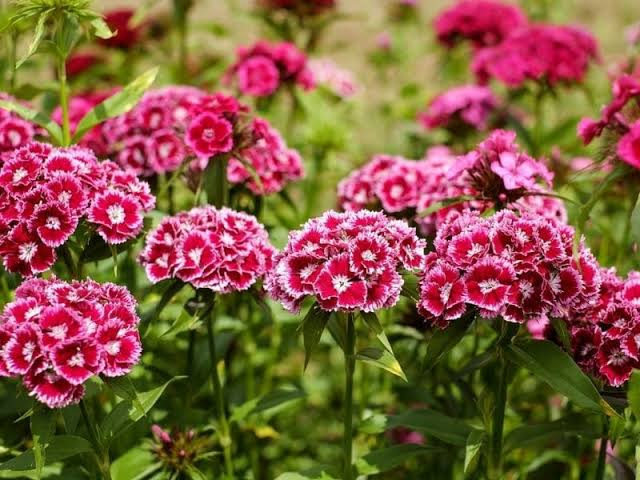
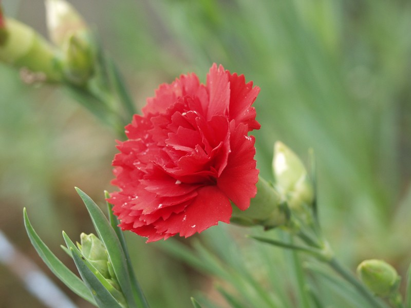
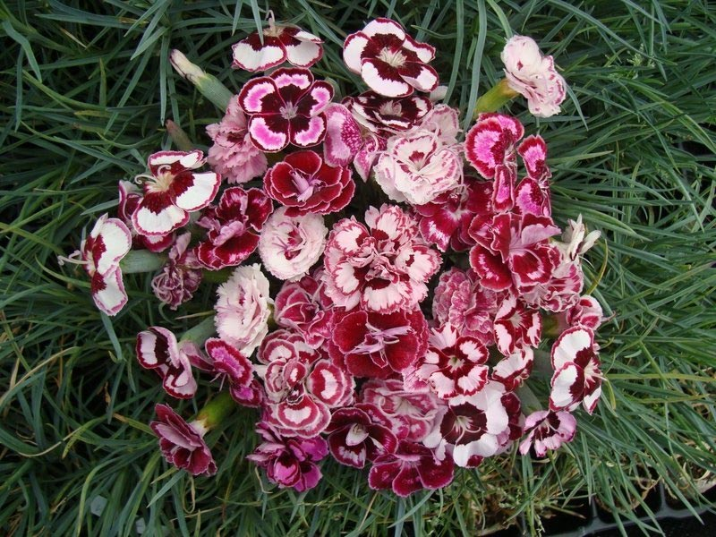
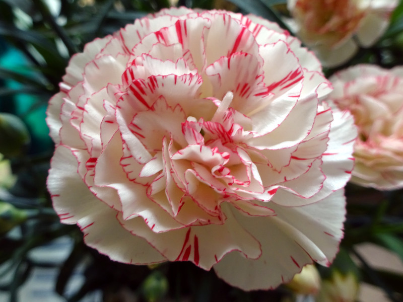

Meaning: Mother’s eternal love, Heartache
Origin
The meaning behind carnations can be traced back to the Crucifixion of Christ; carnations are said to have appeared where the Virgin Mary’s tears fell, leading to their association with heartache and a mother’s eternal love for her son. Additionally, the common name “carnation” may refer to Christ as the incarnation of God as man.
Gallery



